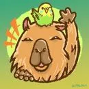

まずは、一緒に使ってみる。
現場の仕事を聞きながら、AIに任せやすい作業を見つけます。職員さん向けの研修も、実際の仕事を題材に。専門用語から始めません。
業務の棚卸し ／ AI研修
AI現場伴走室ワタシトリセツ介護・医療・福祉 × AI
「これ、AIに頼めたらなあ。」
そんな話から、始めましょう。
書類の下書きも、研修のアイデアも。
AIと手分けして、人に向き合う時間をつくる。
現場にいた私が、使えるところまでご一緒します。

三又 謙次郎 おけもん
みまた けんじろう現場の言葉で、話せます。
特養の介護職員サービス管理責任者グループホーム施設長30秒のミニアンケート
3つ選ぶと、あなたの仕事に合う
「相棒の出番」が見えてきます。
むずかしい質問はないよ。
直感で、どうぞ！
ここで選ぶだけでは回答は送信されません。
最後に、回答を添えて相談できます。
できること
試して終わりではもったいないから。
その現場で続けられる形まで、一緒に整えます。
現場の仕事を聞きながら、AIに任せやすい作業を見つけます。職員さん向けの研修も、実際の仕事を題材に。専門用語から始めません。
業務の棚卸し ／ AI研修記録や申し送りの下書き、研修資料づくり。いつもの様式や言葉に合わせて調整し、使い方と確認の手順を残します。研修後の継続サポートも。
導入サポート ／ 現場定着の伴走小さな業務ツールから、採用・広報のホームページまで。AIと一緒に作れるものも、ご相談ください。このホームページも、その実例です。
業務ツール ／ HP・販促物内容と料金は、現場の状況を伺ってからご案内します。まずは無料で話してみる ↗
大切にしていること
表情の変化に気づくこと。
ご家族の言葉を、急がずに待つこと。
そんな時間を増やしたくて、私はAIを使っています。
下書きや整理は相棒に手伝ってもらう。
人への判断やケアは、現場のプロが担う。
AIが現場に、自然といる。
そんな働き方を、一緒につくりたいんです。
はじめまして、おけもんです。
介護・障害福祉の現場で16年。介護職員、サービス管理責任者、施設長として、支援も、記録も、チーム運営も経験してきました。
今は自分の仕事でも、資料づくりや経理などをAIと分担しています。うまくいった話だけでなく、設定を間違えたり、作ったけれど続かなかったり。そんな話も含めて、現場に持ち帰れるものをお渡ししたいと思っています。
もうひとつの仕事は、ストレングスを使ったコーチング。得意なことや、その人らしい進み方を一緒に探す仕事です。AIの話の前に、まず「どんなふうに働きたいか」を聴かせてください。
強みを知るコーチングについて ↗気になること
最初は、ひとつの作業を一緒に試すところから。普段使っている言葉で説明し、職員さんが自分で使える手順に整えます。
まずは架空のデータで試します。実際の業務に使う前に、扱う情報、利用するサービス、施設のルールを確認。入力してよい範囲と人が確認する手順を一緒に決めます。
まずは今の仕組みを伺います。記録ソフトやExcelへ入れる前の「考える・下書きする・整える」にAIを使うこともできます。接続や追加ツールが必要かは、個別に確認します。
ご予算を伺って、研修の内容や進め方を検討します。助成金を検討する場合は、社労士さんや担当窓口へ確認しやすいよう、研修内容の整理をお手伝いします。申請代行や支給保証は行いません。
はい。「この仕事に使える？」「一緒に面白いものを作りたい」も歓迎です。内容を伺い、お手伝いできる範囲をお伝えします。
オンライン・1時間の無料相談
まだ、やりたいことがまとまっていなくても大丈夫。
あなたの仕事にAIがいるとしたら。
どこから始めると面白いか、一緒に考えましょう。
お名前・メールアドレス・ご相談内容をご記入ください。
送信後、メールで日程を調整します。